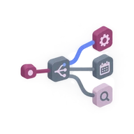
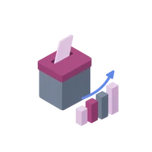

語音與音訊
辨音、音場分類、發音練習判斷（4 個計分任務）
最高平均 89%｜
clef-omni決策模型（decision models）不生成文字，一次就回傳每個答案的機率。我們用語音、影像、繁中文字、Agent 守門與台灣政經五類情境測它們，並先確認模型真的看得到圖、聽得到聲音才計分。
每條刻度是一個支援影像的模型，位置是它在 4 個最拉得開差距的任務（形近字、注音字卡、台灣選擇題、台灣是非題）上的平均正確率。高度越高表示同分的模型越多。
純文字模型只能跑其中 2 個任務，所以不列入這條量尺；它們的分數請見 Dashboard。
完整的分析與每個任務的數據在評測報告裡。
中文文字與 Agent 守門的題目幾乎全員滿分；真正拉開差距的是繁中細節（形近字、注音）與 2025 年後的台灣新事實。下圖依「最高減最低」排序，橫線是所有模型的範圍，實心點是中位數。
34 個模型中只有這幾個能處理音訊。發音練習 50 段的鑑別力（AUC，1 代表完全分得開）：
依實測結果分層，每一層都包含上一層的能力。純文字模型無法處理影像與音訊題。
同一個模型在不同情境的表現差很多，請依你的用途挑模型。Dashboard 可以直接依情境排序與篩選。
辨音、音場分類、發音練習判斷（4 個計分任務）
clef-omni
形近字、注音字卡、數方塊、App 錯誤畫面、圖文一致（6 個計分任務）
jev-1.14繁中評論情緒、詐騙簡訊、客服意圖路由（3 個計分任務）

工具選擇、是否轉真人、LLM-as-judge（3 個計分任務）

政治制度與經濟數據、新聞分類、立場對稱（3 個計分任務）
gpt-6-luna-decisions這個專案一開始只研究 Gemini Decision 1。以下報告的內容與數據維持當時的版本，版面已改用本站設計。